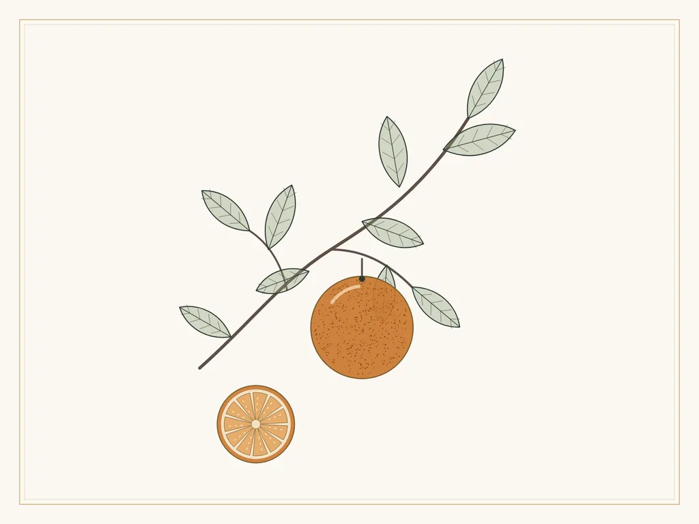
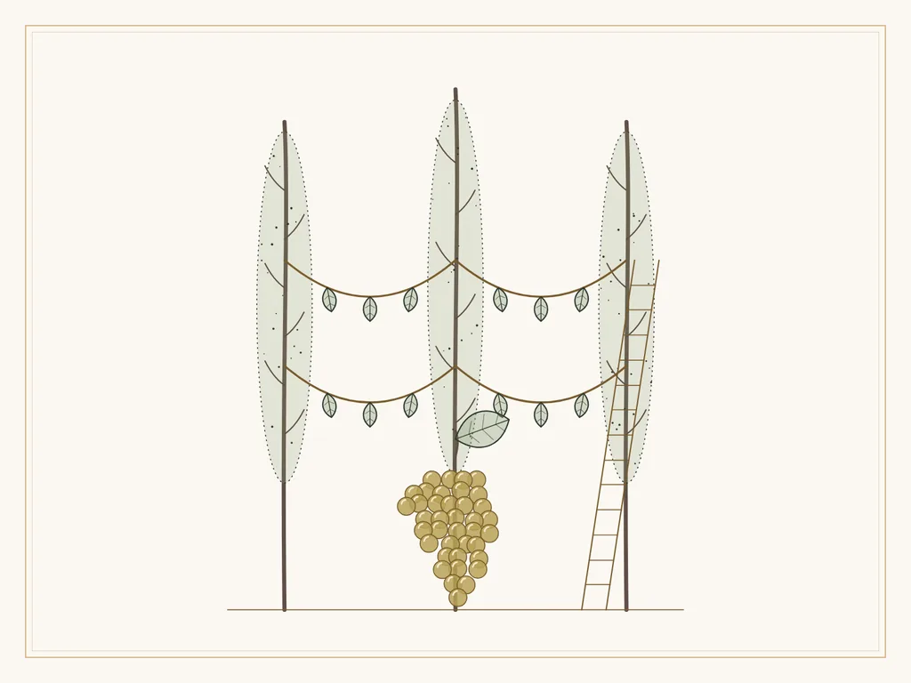
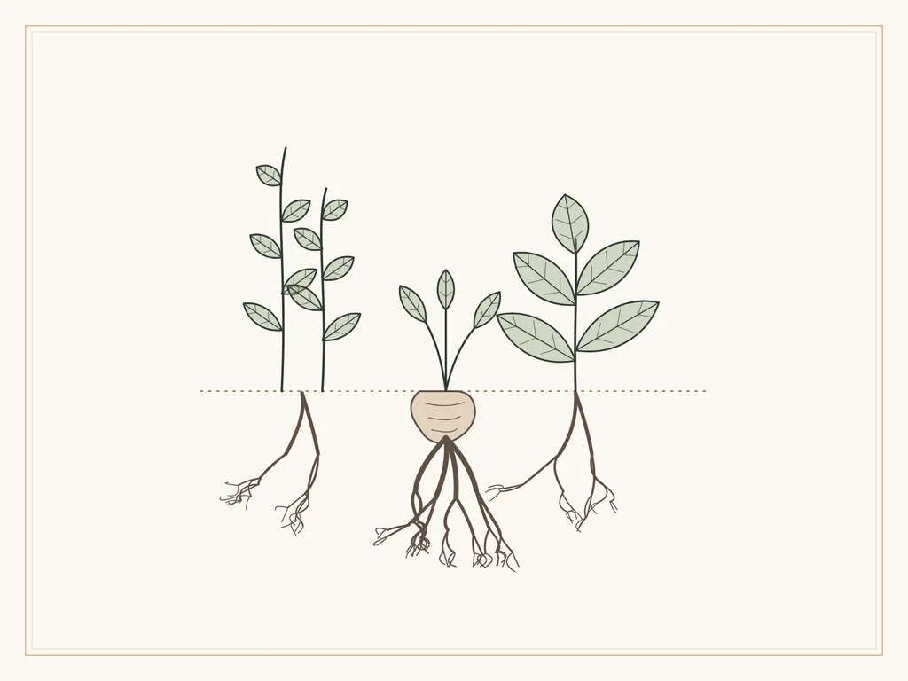
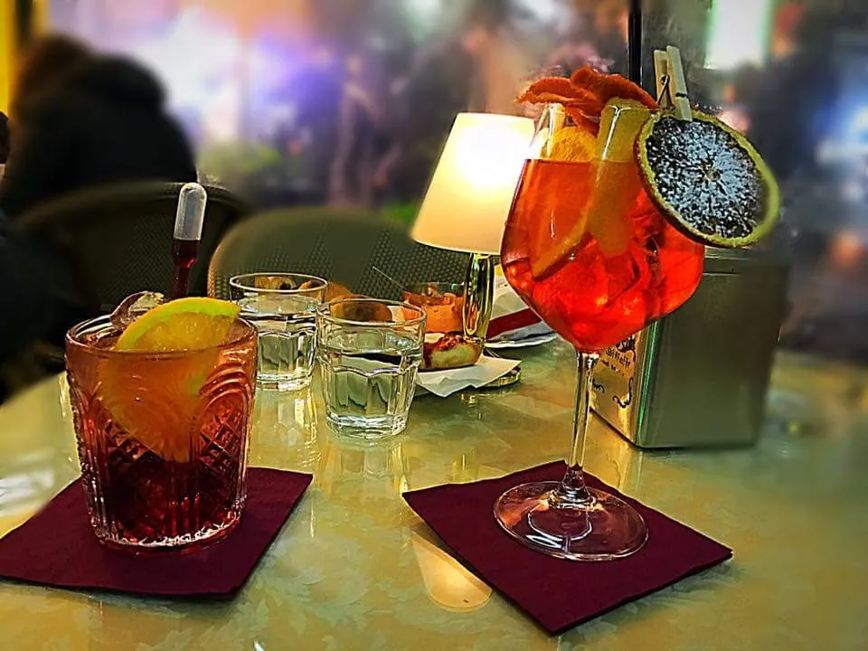

Il mondo Aspritz
Agrumi della Costiera, Asprinio di Aversa, erbe e radici, l'aperitivo a Napoli: le storie dietro l'Aspritz, l'aperitivo ideato da Ceraldi.
Scopri l'Aspritz, la nostra creazione

· 4 min di lettura
L'Aspritz Ceraldi: quando un aperitivo racconta un territorio
Tre luoghi della Campania, un bancone in Piazza Carità e un'idea semplice: un aperitivo che sappia da dove viene.

· 5 min di lettura
Gli agrumi della Costiera Amalfitana: profumi e identità della Campania
Giardini sospesi sul mare, costruiti a mano terrazza dopo terrazza: gli agrumi sono il paesaggio stesso della Costiera Amalfitana.

· 5 min di lettura
Asprinio di Aversa: il carattere di un vino campano
Viti alte come alberi, vendemmiate con le scale: l'Asprinio è uno dei vini più particolari della Campania, e il cuore frizzante del nostro Aspritz.

· 5 min di lettura
Radici ed erbe nell'aperitivo: il fascino della componente botanica
Dietro la nota amaricante di un aperitivo c'è un piccolo erbario: radici, cortecce, foglie e scorze, dosate per dare equilibrio.
· 5 min di lettura
L'aperitivo a Napoli: tradizione, convivialità e nuove interpretazioni
L'aperitivo è nato al Nord, ma a Napoli ha trovato una città abituata da sempre a ritrovarsi al bar. Ecco cosa sappiamo e cosa è cambiato.

· 4 min di lettura
Aspritz: dentro la nostra idea di aperitivo
Un aperitivo si costruisce per scelte, una dopo l'altra. Queste sono le nostre, e il motivo per cui le abbiamo fatte.